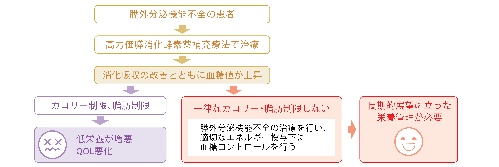
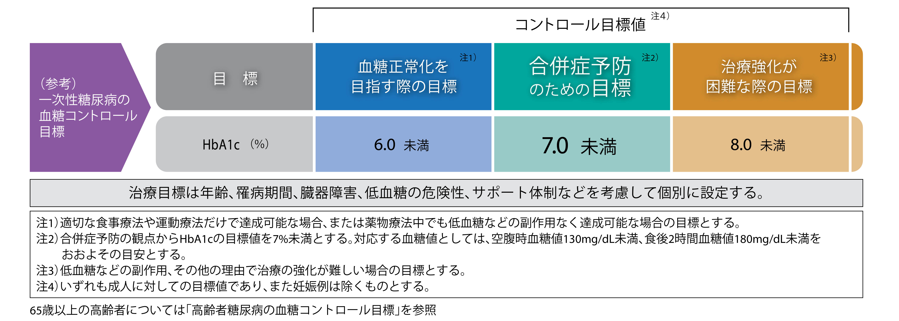

2. 禁忌（次の患者には投与しないこと）
2. 1 本剤の成分に対し過敏症の既往歴のある患者
2. 2 ブタ蛋白質に対し過敏症の既往歴のある患者

監修 ： 清水 京子 先生
新宿三井ビルクリニック 院長
2. 禁忌（次の患者には投与しないこと）
2. 1 本剤の成分に対し過敏症の既往歴のある患者
2. 2 ブタ蛋白質に対し過敏症の既往歴のある患者
膵臓の働き
※小腸内pHを消化酵素が作用する中性からアルカリ性に変える。
下瀬川徹ほか監修: 専門医のための消化器病学 第3版, p.590-591, 620-623, 医学書院, 2021.
日本消化器病学会編: 慢性膵炎診療ガイドライン2021, 改訂第3版, p.105-106, 2021, 南江堂
清水京子先生ご提供
慢性膵炎とは
回 答
慢性膵炎とは、遺伝的や環境要因、その他の危険因子を有し、実質への傷害やストレスに対して 持続的な病的反応を生じる個人に起きる、膵臓の病的線維化炎症症候群である。日本では 「慢性膵炎臨床診断基準2019」に基づいて診断する。
「日本消化器病学会編：慢性膵炎診療ガイドライン2021, 改訂第3版, p.2, 2021, 南江堂」より許諾を得て転載
慢性膵炎の疫学
厚生（労働）省難治性膵疾患に関する調査研究班を中心に、急性膵炎および慢性膵炎に関する全国調査が数年おきに行われている。 1年間に慢性膵炎で医療機関を受療した患者を調べるため、全国の内科（消化器内科を含む）、外科（消化器外科を含む）を標榜する診療科より層化無作 為抽出法により抽出。とくに膵疾患患者の集中する施設は特別階層とし全施設を調査対象とした。抽出された診療科に調査票を送付し、慢性膵炎患者数 の報告を依頼し、集計した。
正宗淳ほか. 胆と膵. 2014; 35: 1011-1014.
Masamune A, et al. J Gastroenterol. 2020; 55: 1062-1071.
厚生労働科学研究費補助金 難治性疾患克服研究事業. 難治性膵疾患に関する調査研究 平成14~16年度(2005年3月）大槻 眞「慢性膵炎の全国調査」p.125-129.
厚生労働科学研究費補助金 難治性疾患克服研究事業. 難治性膵疾患に関する調査研究 平成22年度 総括・分担研究報告書. 下瀬川徹「慢性膵炎の実態調査に関する全国調査」p.7-32.
厚生労働科学研究費補助金 難治性疾患克服研究事業. 難治性膵疾患に関する調査研究 平成23~25年度 総括・分担研究報告書. 下瀬川徹「慢性膵炎の実態調査に関する全国調査」 p.219-225.
厚生労働科学研究費補助金 難治性疾患克服研究事業. 難治性膵疾患に関する調査研究 平成25年度 総括・分担研究報告書. 下瀬川徹「慢性膵炎の実態調査に関する全国調査」p.167-172.
慢性膵炎の成因
全国調査の調査方法
目的：日本膵臓学会による2016年1年間に慢性膵炎で全国の医療機関を受療した患者数の調査。
方法：層化無作為抽出法により、全国の内科（消化器内科を含む）、外科（消化器外科を含む）を標榜する2,502科を抽出。抽出された2,502診療科に調査
票を送付し、確診および準確診例と診断された慢性膵炎患者数の報告を依頼し（一次調査）、854診療科から回答を得た。一次調査で患者有りと回答
した診療科に対して二次調査票（症例調査票）を送付し、成因など、慢性膵炎の臨床像を調査・解析した。
Masamune A, et al. J Gastroenterol. 2020; 55: 1062-1071をもとに作成
慢性膵炎 病期別の症状
監修/新宿三井ビルクリニック 院長 清水京子先生
代償期
腹痛・背部痛
悪心・嘔吐、
食欲不振など
非代償期
体重減少、
脂肪便、
下痢など
下瀬川徹, 渡辺守 監修. 正宗淳ほか: 専門医のための消化器病学 第3版. p.622, 医学書院, 2021.
日本消化器病学会編: 慢性膵炎診療ガイドライン2021, 改訂第3版, p.2-8, 2021, 南江堂.
片岡 慶正ほか: medicina, 2009; 46(3), 436-440. 一部改変
山本泰猛: 日内会誌, 1993; 82: 81-85.より作図
慢性膵炎の代償期と非代償期の比較
下瀬川徹ほか：膵臓. 2010; 25: 617-681.
石井有理ほか：膵臓. 2020; 35: 174-179. 一部改変
日本消化器病学会編：慢性膵炎診療ガイドライン2021, 改訂第3版, p.56, 67, 71, 91, 97, 99, 2021, 南江堂 を参考に作成
回 答
慢性膵炎患者に対する病期を考慮した栄養療法は有用である。腹痛を有する代償期の患者に は短期的な脂肪制限食が有効である。ー方、非代償期の患者には十分な膵消化酵素薬補充療 法を行ったうえで脂肪を制限しない食事摂取が望ましい。 「日本消化器病学会編：慢性膵炎診療ガイドライン2
「日本消化器病学会編：慢性膵炎診療ガイドライン2021, 改訂第3版, p.71, 2021, 南江堂」より許諾を得て転載
膵外分泌機能不全の治療
回 答
膵外分泌機能不全を伴う慢性膵炎の非代償期では画ー的な脂肪制限食は行わないことを推奨する。
【推奨の強さ：強（合意率71%）、エビデンスレベル：D】
「日本消化器病学会編：慢性膵炎診療ガイドライン2021, 改訂第3版, p.97, 2021, 南江堂」より許諾を得て転載
回 答
脂肪便や体重減少を有する膵外分泌機能不全に対して高力価膵消化酵素薬を投与することを推奨する。
【推奨の強さ：強（合意率100%）、エビデンスレベル：A】
「日本消化器病学会編：慢性膵炎診療ガイドライン2021, 改訂第3版, p.99, 2021, 南江堂」より許諾を得て転載
回 答
膵性糖尿病に対する一律なカロリー制限は栄養状態の低下や低血糖を助長するリスクがあり、行わないことを推奨 する。膵外分泌機能不全の治療を行い、適切なエネルギー投与下に血糖コントロールを行う必要がある。
【推奨の強さ：強（合意率85%）、エビデンスレベル：D】
「日本消化器病学会編：慢性膵炎診療ガイドライン2021, 改訂第3版, p.103, 2021, 南江堂」より許諾を得て転載
膵外分泌機能不全の治療評価
回 答
体重、BMI、血清アルブミン、プレアルブミン、レチノール結合蛋白、総コレステロール、ビタミン A、25OHビタミンD、ビタミンEなどから複数を用いての評価が有用である。
「日本消化器病学会編：慢性膵炎診療ガイドライン2021, 改訂第3版, p.95, 2021, 南江堂」より許諾を得て転載
慢性膵炎における栄養評価
栄養状態は、症状、器官機能、身体計測、血液生化学検査値に従って評価する必要がある。
BMIだけでは慢性膵炎の肥満患者におけるサルコペニアが見落とされてしまうため、BMIだ
けを使用するべきではない。
慢性膵炎患者でBMI≧25の割合：男性53.3％、女性41.2％
（ESPEN guideline on clinical nutrition in acute and chronic pancreatitis）
Arvanitakis M et al.: Clin Nutr 2020; 39: 612-631.
慢性膵炎と関連性のある疾患・症状
慢性膵炎の23.4％（95％CI 16.6～32.0）に骨粗鬆症があり、39.8％（95％CI 29.1～51.6）
に骨減少症がみられるとの報告がある。
・膵外分泌機能不全の62.5％でビタミンDが欠乏し、骨密度計測T-scoreを用いた検討で68.9％
に骨減少症または骨粗鬆症がみられると報告されている。
・慢性膵炎のサルコペニアは、入院リスク（オッズ比2.2、95％CI 0.9～5.0、p=0.07）や死亡リスク （ハザード比6.7、95％CI 1.8～25.0、p=0.005）の有意な増加につながるとの報告がある。
・ア ・大血管障害について、慢性膵炎患者では非慢性膵炎患者に比べて心血管疾患や脳血管疾患のリ スクが高いと報告されている。
日本消化器病学会編：慢性膵炎診療ガイドライン2021, 改訂第3版, p.9, 93, 105, 122, 2021, 南江堂.
膵性糖尿病の治療
推 奨
膵性糖尿病に対する一律なカロリー制限は栄養状態の低下や低血糖を助長するリスクがあり、行わないことを推奨 する。膵外分泌機能不全の治療を行い、適切なエネルギー投与下に血糖コントロールを行う必要がある。
【推奨の強さ：強（合意率85%）、エビデンスレベル：D】
「日本消化器病学会編：慢性膵炎診療ガイドライン2021, 改訂第3版, p.97, 2021, 南江堂」より許諾を得て転載
日本消化器病学会編：慢性膵炎診療ガイドライン2021, 改訂第3版, p.99, 103, 109, 2021, 南江堂より作図
推 奨
インスリン抵抗性が疑われる、またはインスリン分泌能が保たれている膵性糖尿病に対しては、経口血糖降下薬を投 与することを提案する。
【推奨の強さ：弱 （合意率93%）、エビデンスレベル： D 】
「日本消化器病学会編：慢性膵炎診療ガイドライン2021, 改訂第3版, p.107, 2021, 南江堂」より許諾を得て転載
推 奨
膵性糖尿病において、インスリン依存状態であればインスリン療法を行うことを推奨する。
【推奨の強さ： 強 （合意率93%）、エビデンスレベル：C 】
「日本消化器病学会編：慢性膵炎診療ガイドライン2021, 改訂第3版, p.109, 2021, 南江堂」より許諾を得て転載
膵性糖尿病は低血糖リスクが高いため、一次性糖尿病における血糖コントロール目標値は適切で
はなく、一次性糖尿病に比べて高めの血糖コントロール目標値を設定。
HbA1c 7.5％はひとつの指標となりうるが、具体的な血糖コントロール目標値は更なる検討が必要。
日本消化器病学会編：慢性膵炎診療ガイドライン2021, 改訂第3版, p.111-112, 2021, 南江堂.
日本糖尿病学会 編・著 : 糖尿病治療ガイド2022-2023, p34, 文光堂, 2022.